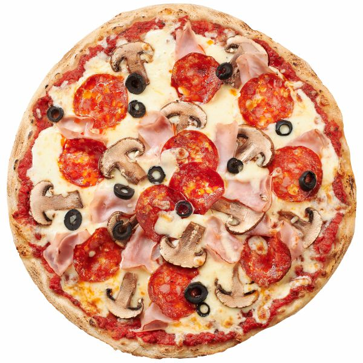

Pizza

Descriere
Pizza este un fel de mâncare cu originea în Napoli, Italia. Este o pâine
plată, de obicei rotundă, acoperită cu sos de roșii și brânză, plus alte
topping-uri opționale, preparată la cuptor. Pissa este un termen latin,
apărut în secolul IX, care înseamnă "pâine plată".
Ingrediente
- 1kg aluat
- 30ml ulei
- 1 lingurita sare
- 600ml apa
- 5 ciuperci
- 500g sos de rosii
- 10g ceapa
- 1 catel de usturoi
- jumatate de lingurita de oregano
Pasi de Urmat
- Preparam aluatul
- Preparam sosul
- Pregateste ingredientele
- Pune sosul si ingredientele pe aluat
- Pune aluatul la cuptor
- Asteapta